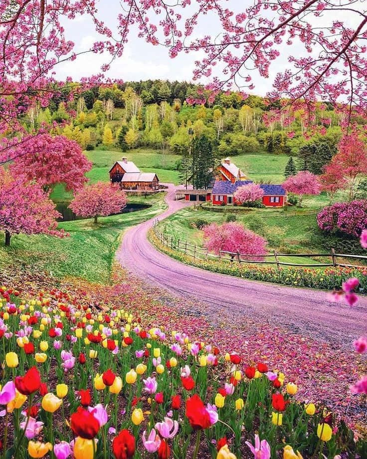

Sping is my top favorite season; it's bright, colorful, and the perfect temperature.
Fall is my second favorite; fall clothing is fun to wear, pretty aestetics and colorful. But it doesnt last as long and its gets colder.
Summer is third; it's nice and pretty on some days but the heat can be a bit too much.